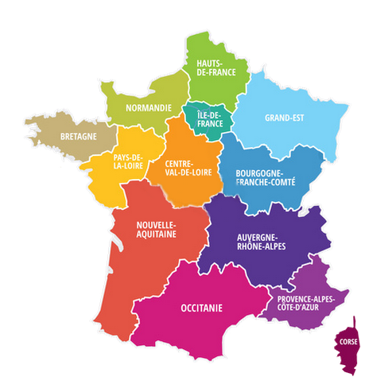

Carte Interactive des Régions de la France
Bienvenue ici.

Cette carte interactive permet d'explorer les différentes régions de la France. Chaque région est un lien cliquable menant vers son site officiel, où vous pouvez en apprendre davantage sur les projets, l'économie et les événements de chaque région.